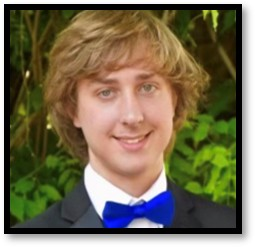
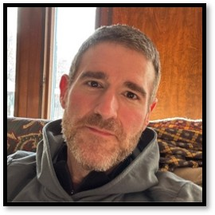

Meet the Team
The Students:

Robert Draper
Project Manager & Drone Construction Lead
Oliver Higginbotham
Chief Scientist & Drone Control Lead
Caden Carter
Attachments Lead
Joshua Evans
Drone Network Lead
Antonio Gray
Object Detection Lead
The Advisors:

Dr. Aly Abdalla
Faculty Advisor
Dr. Dimitrios Manias
Faculty Advisor

Curt Dennis
External Advisor
Our sponsors